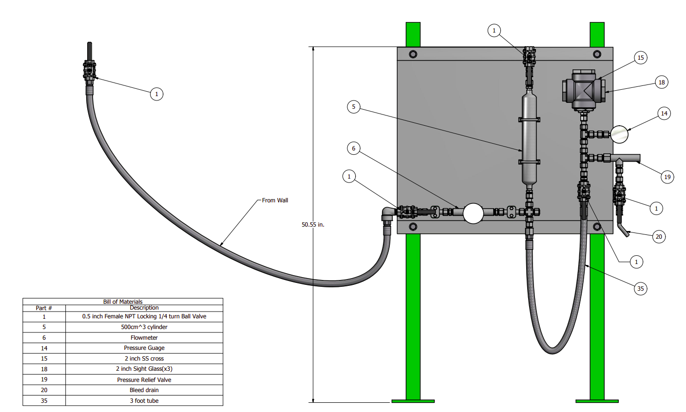

Colorado School of Mines-educated Mechanical Engineer with a Bachelor of Science in Mechanical Engineering and certified EIT with 8+ years’ experience in autonomous vehicle assemblies and high-pressure process machines. Skilled in designing IP-rated enclosures and thermal management systems using advanced CAD and CFD tools, and leading cross-functional reviews for cost-effective, streamlined fabrication. Ready to leverage DFM/DFA and rapid prototyping expertise to deliver high-performance, cost-effective mechanical solutions to your team.
Objective: To develop an IP rated enclosure which contains highly sensitive high power computer equipment. Computers must operate within thermal design power (TDP) limits with a safety margin. Result: Solution included a durable, off-the-shelf cabinet with electrical connection bulkhead connections to ease disconnects and louvers to exhaust hot air. The thermal solution involved drawing ambient air through an automotive air filter into a dual-wheel blower, which provided forced convection cooling over the heat sinks of sensitive components.
Objective: To design an IP54 rated enclosure for safety critical flexisoft safety controller. Enclosure required to be retrofitted on existing vehicle fleet. Result: Enclosure housed Flexisoft safety controller, I/O, and power modules. Fabricated from a single bent sheet metal piece with a polycarbonate window for module link light inspection.
Objective: To develop CAD models of numerous high-pressure CO2 process skids, pressure vessel assemblies, tube & piping and ancillery equipment. Result: Developed numerous large assemblies with associated drawing packages using multiple Autodesk Inventor environments including: Tube & Pipe, Frame Generator, Sheet Metal, Weldments and FEA.
High-pressure CO2
test fixture

Assembly layout drawing of high pressure CO2 test fixture
Surfactant testing through multiple CO2 phase changes
Movie shows CO2 phase change transitions around triple point. Initial state shows CO2 as high pressure liquid then transitions to gas through boiling, and flash point, by reducing pressure ultimately arriving at solid CO2 (dry ice) and vapor through deposition.
Objective: To create high pressure CO2 test fixture for surfactant and detergent testing. Result: Assembly included 2000# forged steel cross fitting with high pressure viewports.
Objective: To develop CAD models of numerous high-pressure CO2 process skids, pressure vessel assemblies, tube & piping and ancillery equipment. Result: Developed numerous large assemblies with associated drawing packages using multiple Autodesk Inventor environments including: Tube & Pipe, Frame Generator, Sheet Metal, Weldments and FEA.


{kind=link}